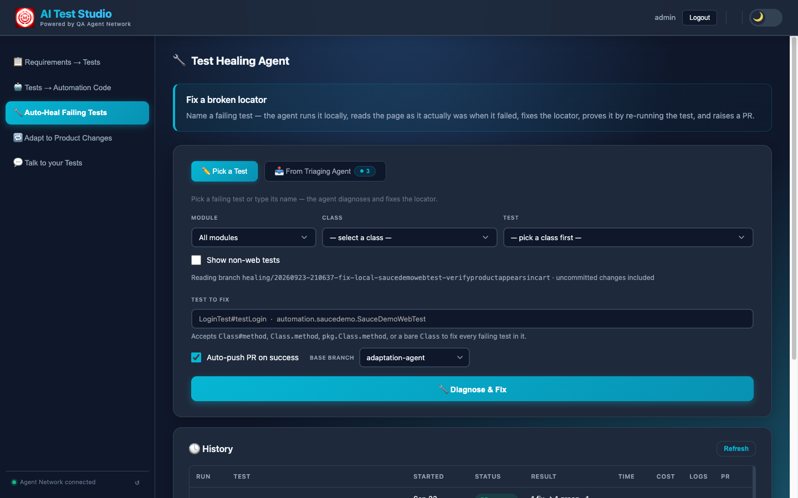
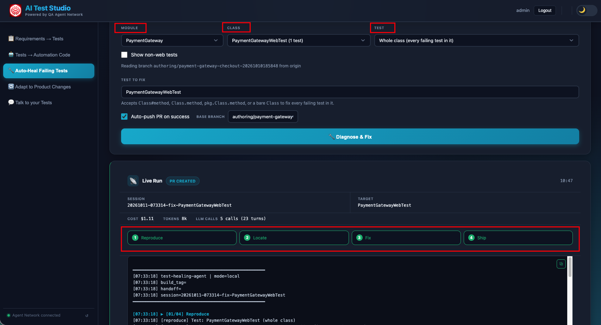

A UI change ships: a button gets a new data-test attribute, a modal gets a new class name. Tests start failing with "element not found." But that error has a dozen causes, and only one of them is a stale selector. The healing agent works out why the element was missing, fixes the locator only when the selector itself is the defect, proves every fix by re-running the real test, and raises a GitHub PR. Engineers review a diff, not a debugging session.
The Problem
Locator failures are the most common, most tedious category of automation breakage. A UI change ships (a button gets a new data-test attribute, a form field gets a new id), and tests start failing with Element not found.
A QA engineer then has to: find which page object has the stale locator, figure out the new selector by opening DevTools against staging, update the Java file, re-run the test to verify the fix, then commit and push. That's 30–45 minutes per locator, multiplied by however many broke in this deployment.
The harder problem is one the first version of this agent missed. An element is missing identically however it went missing: the page was still loading, a request failed, an earlier click silently did nothing, the session expired and left the flow on the login page. An agent that treats every one of those as a stale locator will "fix" them anyway, and the verification loop won't catch it, because the easiest way to make a page check pass is to weaken it. So the current agent diagnoses first, and edits only when the answer allows it.
HEALING_MAX_FIXES_PER_RUNHEALING_RETRY_COUNT · HEALING_MAX_ATTEMPTSTwo Ways In
From the triaging agent. After a CI build, the triaging agent queues failures that are AUTOMATION_ISSUE, HIGH confidence, with a root cause of LOCATOR_STALE, AMBIGUOUS_LOCATOR or ELEMENT_NOT_FOUND, and not one of the diagnosis stop verdicts. They land in a handoff file:
agents/test-healing-agent/queue/<build-tag>.json
Standalone, by naming a test. Pick a failing test on AI Test Studio's Auto-Heal Failing Tests page, or run ./scripts/run-healing-agent.sh --test Class#method. A whole class works too. The agent runs the test itself first, so it works from a real, fresh failure rather than a report.

Diagnose Before Editing
Before anything touches a locator, a diagnosis engine answers "why wasn't the element there?" from evidence already on disk: the DOM snapshot captured at failure, the trace, the page baselines recorded on the last green run, and the test's own step history. It returns one verdict:
- FIX LOCATOR_STALE, AMBIGUOUS_LOCATOR mean the defect lives in the selector itself: it no longer matches its element, or it matches more than one. Only these two authorise an edit.
- STOP WRONG_PAGE, PRIOR_STEP_FAILED, ERROR_STATE, ENV_UNREACHABLE, DATA_PRECONDITION, FLAKY_TRANSIENT, ELEMENT_GONE, NOT_READY, TOO_SLOW, BLOCKED: no locator edit can fix these. The run ends before any model call and reports the cause and the change a human would make.
- ABSTAIN INSUFFICIENT_EVIDENCE: falls through to the normal fix path, so a weak signal never blocks a genuine fix.
Why diagnosis comes first
A green re-run proves the test passes. It does not prove the fix was right. A fix built on a wrong diagnosis goes green (by pointing at a different element, or by loosening a check), and ships a permanently broken test with a passing run as its alibi. Deciding the cause before editing is the only place that mistake can be caught.
The Pipeline
Runs the named test. A pass, or a failure that isn't about a locator, ends the run with an explanation instead of a guess. REPAIR=true parks the failing browser so an engineer can inspect it live; FORCE=true proceeds anyway.
The target framework records a fingerprint of every element on each green page load. Locate compares that fingerprint with the capture taken at failure, scores the candidates, and proposes a selector that is proven unique against the saved DOM, written in the repo's own syntax. An offline benchmark (locator-eval) keeps the engine honest.
Runs the diagnosis. On a locator verdict it applies Locate's proposal, or, when Locate can't prove one, asks Claude, which sees the test, the page objects, the failure evidence and the automation repo's own CLAUDE.md conventions. Then it re-runs the real test. Passing edits are committed; failing ones are rolled back.
↺ Repeat while it makes progress. One repaired locator often gets the flow further, onto the next broken one. A test that now fails on a different element is progress: the edit stays, and the next attempt is handed the new failure. Only a test that still fails on the same element condemns the edit.
Pushes a healing/<session-id> branch, opens the PR and posts to Slack.

A demo run on SauceDemo, with two locators broken on purpose. Locate proposed both selectors deterministically (each scored against the fingerprint from the last green run), so the run made zero model calls and cost $0. The first fix got the test past the login button to a second broken locator; the loop kept that edit and fixed the next one too.
Fixing by Defect, Not by Test
One broken locator fails every test that walks past it, so a build with 30 failures is usually a handful of defects. The agent works in phases:
- Understand everything first. Context is built for every failing test (test file, page objects, element names, trace), with no model calls.
- Group by what actually broke. Failures are clustered on (page object, element), so five tests dying on the same element are one unit of work.
- Cap defects, not tests.
HEALING_MAX_FIXES_PER_RUNlimits distinct fixes. The largest clusters go first, so a capped run unblocks the most tests it can; the rest are reported as deferred, not silently dropped. - Every affected test must still prove it. All members of a cluster are re-run, and a fix is credited only for the tests that actually pass.
The GitHub PR
The PR lists every fix: which test, which file, the old selector and the new one, and how it was verified. The agent never reports an unverified fix as verified: verified, unverified and failed stay distinct all the way to the PR, and anything short of verified marks it NEEDS-REVIEW. If nothing was fixed, no PR is opened.
Refreshed page baselines are committed with the fix, so the next failure has an up-to-date fingerprint to compare against. Slack gets the result: all fixed goes to the notify channel, a partial or empty result to the alert channel. With AUTO_PUSH=false the run works in the local checkout and pushes nothing, a safe dry run for a new environment.
The Closed Loop
The full autonomous cycle
The engineer touches two points: the merge decision and the product bug investigation. Everything in between (triage, diagnosis, fix, verification, PR) is autonomous.
When the page was rebuilt, not re-labelled. If every locator on a page stopped matching but its URL still matches the last good run, the page was redesigned in place: a flow change, not a stale selector. Healing doesn't try to patch that. It writes a draft change note for the Test Adaptation Agent, which a human reviews before it runs.
Limits and Guardrails
The healing agent is deliberately narrow. It holds exactly one repair hypothesis (the selector string is stale) and the guardrails below enforce that narrowness.
- DIAGNOSIS FIRST Only LOCATOR_STALE and AMBIGUOUS_LOCATOR authorise an edit. Stop verdicts end the run before any model call.
- LOCATORS ONLY Selector strings change; steps, waits and checks do not. Flow changes belong to the adaptation agent.
- PROVEN BY THE TEST Every fix must pass the real test before it is committed. A failing edit is restored.
- 5 DEFECTS PER RUN HEALING_MAX_FIXES_PER_RUN caps distinct fixes. Deferred defects are listed, not dropped.
- PROGRESS BUDGET HEALING_RETRY_COUNT attempts may make no progress; HEALING_MAX_ATTEMPTS is the hard ceiling however much progress is being made.
- HIGH CONFIDENCE ONLY From triaging, only HIGH-confidence automation issues qualify. If the triaging agent isn't sure, healing doesn't attempt it.
- HONEST PR Verified, unverified and failed stay distinct. Anything short of verified marks the PR NEEDS-REVIEW.
- DRY RUN MODE AUTO_PUSH=false applies and tests fixes in the local checkout and pushes nothing.
The principle behind the guardrails
An agent that fixes tests perfectly 90% of the time but sometimes commits wrong changes in a way engineers can't trace is worse than no agent at all. Every guardrail here is about maintaining trust: the agent works out the cause before it edits, never commits an unproven fix, and the PR always shows what changed, why, and how it was verified.
How It's Measured
The locator engine has its own offline benchmark: a corpus of page changes where the right answer is known in advance. Every element is tagged with its true identity before the page is changed, and the tag is stripped before the engine sees the page, so it can't see the answer.
A wrong fix is the failure that matters most: the test goes green while checking the wrong element, and nobody notices. That is why it is the gating metric, not accuracy. Part of the corpus was written after the engine's settings were frozen and is never tuned against, so a good result isn't the engine memorising its own test set. The engine makes no LLM calls on any of it.
Next: The Test Adaptation Agent
Healing repairs locators after a test goes red. The adaptation agent goes further: it updates test steps when the product changes (before anything fails) and proves each test still checks what it checked before.